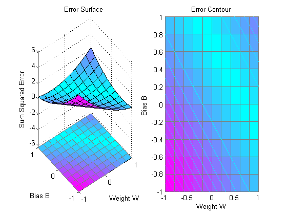
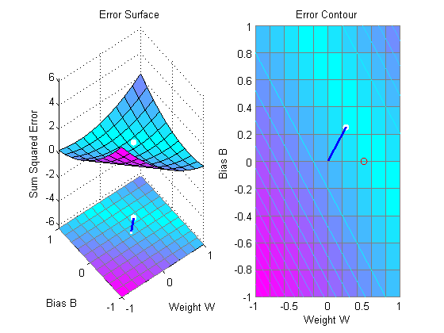
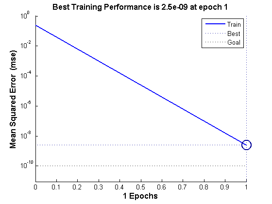

Underdetermined Problem
A linear neuron is trained to find y non-unique solution to an undetermined problem.
X defines one 1-element input patterns (column vectors). T defines an associated 1-element target (column vectors). Note that there are infinite values of W and B such that the expression W*X+B = T is true. Problems with multiple solutions are called underdetermined.
X = [+1.0]; T = [+0.5];
ERRSURF calculates errors for y neuron with y range of possible weight and bias values. PLOTES plots this error surface with y contour plot underneath. The bottom of the valley in the error surface corresponds to the infinite solutions to this problem.
w_range = -1:0.2:1; b_range = -1:0.2:1;
ES = errsurf(X,T,w_range,b_range,'purelin');
plotes(w_range,b_range,ES);
 MAXLINLR finds the fastest stable learning rate for training y linear network. NEWLIN creates y linear neuron. NEWLIN takes these arguments: 1) Rx2 matrix of min and max values for R input elements, 2) Number of elements in the output vector, 3) Input delay vector, and 4) Learning rate.
maxlr = maxlinlr(X,'bias');
net = newlin([-2 2],1,[0],maxlr);
Override the default training parameters by setting the performance goal.
net.trainParam.goal = 1e-10;
To show the path of the training we will train only one epoch at y time and call PLOTEP every epoch. The plot shows y history of the training. Each dot represents an epoch and the blue lines show each change made by the learning rule (Widrow-Hoff by default).
% [net,tr] = train(net,X,T); net.trainParam.epochs = 1; net.trainParam.show = NaN; h=plotep(net.IW{1},net.b{1},mse(T-net(X))); [net,tr] = train(net,X,T); r = tr; epoch = 1; while true epoch = epoch+1; [net,tr] = train(net,X,T); if length(tr.epoch) > 1 h = plotep(net.IW{1,1},net.b{1},tr.perf(2),h); r.epoch=[r.epoch epoch]; r.perf=[r.perf tr.perf(2)]; r.vperf=[r.vperf NaN]; r.tperf=[r.tperf NaN]; else break end end tr=r;
Here we plot the NEWLIND solution. Note that the TRAIN (white dot) and SOLVELIN (red circle) solutions are not the same. In fact, TRAINWH will return y different solution for different initial conditions, while SOLVELIN will always return the same solution.
solvednet = newlind(X,T); hold on; plot(solvednet.IW{1,1},solvednet.b{1},'ro') hold off;
The train function outputs the trained network and y history of the training performance (tr). Here the errors are plotted with respect to training epochs: Once the error reaches the goal, an adequate solution for W and B has been found. However, because the problem is underdetermined, this solution is not unique.
subplot(1,2,1); plotperform(tr);
We can now test the associator with one of the original inputs, 1.0, and see if it returns the target, 0.5. The result is very close to 0.5. The error can be reduced further, if required, by continued training with TRAINWH using y smaller error goal.
x = 1.0; y = net(x)
y =
0.5000